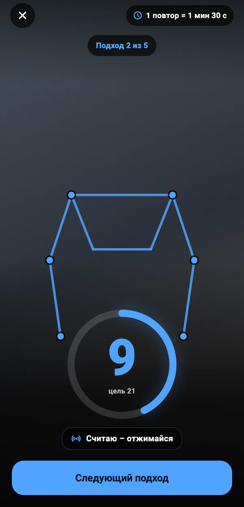
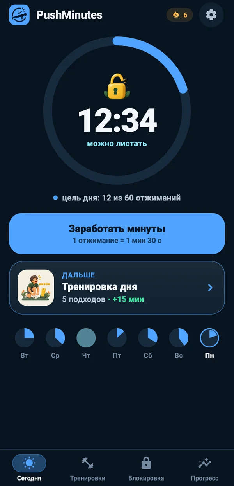
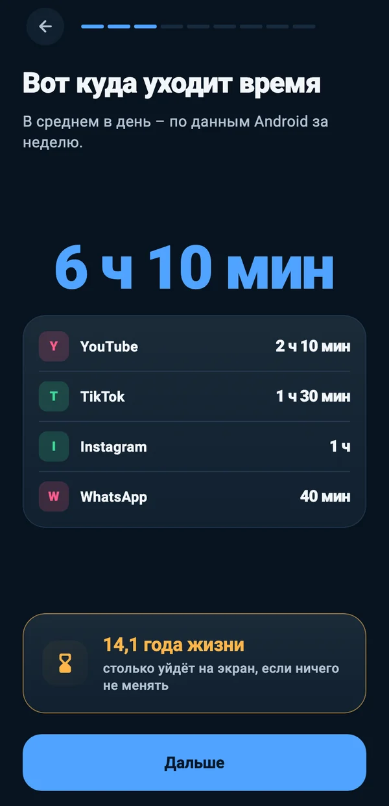
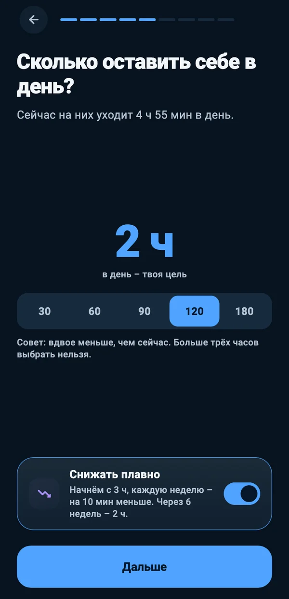
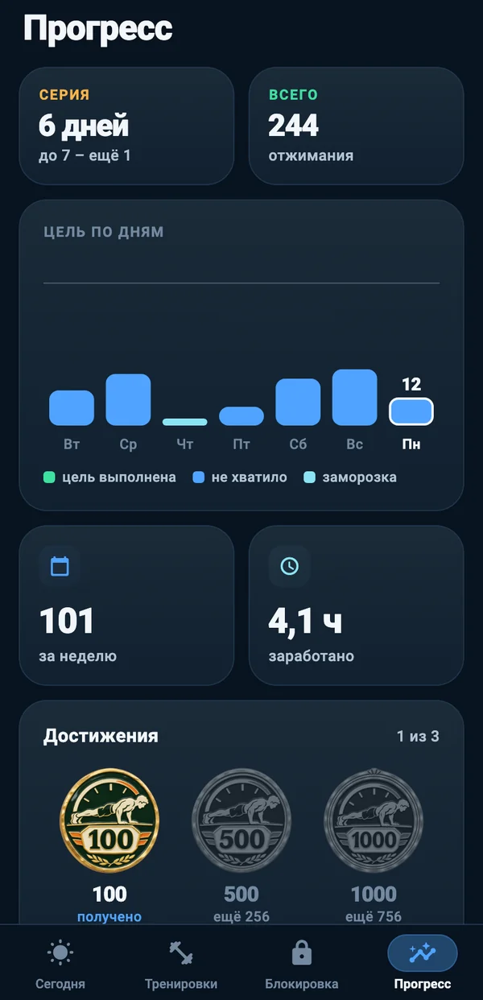

Хочешь листать?Сначала заработай
PushMinutes закрывает приложения, которые съедают твоё время. Открыть их можно отжиманиями и приседаниями – камера телефона считает каждое повторение.
Android 7.0 и новее · 14 дней бесплатно, без карты



Каждое повторение – это минуты.
Цена простая: дневной лимит делится на цель дня. Цель выполнена – весь лимит твой. Сделано меньше – минут меньше.
Как это работает
Три шага до первой заработанной минуты.
- 01
Посмотри, куда уходит время
PushMinutes берёт статистику самого Android и показывает настоящую цифру – по каждому приложению, за день.

- 02
Реши, сколько оставить
Выбери дневной лимит от 30 минут до 3 часов. Старт близко к тому, что есть сейчас, дальше лимит может снижаться на 10 минут в неделю.

- 03
Заработай на полу
Поставь телефон примерно в двух метрах от себя. Камера считает отжимания или приседания, каждое повторение добавляет минуты.
Честный счёт
Считаются только полные повторения.
Счётчик настроен на настоящих записях, в том числе на попытках схитрить.
Считается
- Полные отжимания: грудь вниз и обратно
- Глубокие приседания – два приседания идут за одно отжимание
- Отжимания с колен – в отдельном режиме для начинающих
- Телефон спереди или сбоку
Не считается
- Половинки
- Кивки в камеру
- Отжимания с колен под видом обычных



Привычка
Сделано, чтобы не бросить.
- Цель дня
- Выполни её, и откроется весь дневной лимит. Цель одна на отжимания и приседания.
- Серия с днём заморозки
- Один пропущенный день в неделю серию не обрывает.
- Строгий режим
- Снять блокировку стоит от 120 отжиманий за один заход. В минуту слабости не выйдет.
- Экстренные минуты
- Раз в день – когда телефон правда нужен.
- Сэкономленное время
- Видно, насколько меньше уходит на экран, чем раньше.

Конфиденциальность
Ничего не уходит с телефона.
- Видео не записывается и никуда не отправляется. Поза распознаётся на самом телефоне.
- Без аккаунта и регистрации.
- Без рекламы и аналитики.
- У самого приложения нет доступа в интернет.
14 дней бесплатно. Карта не нужна.
Дальше нужна платная подписка PushMinutes с автопродлением. Цена показана в приложении до оплаты, отменить можно в любой момент в Google Play.
Вопросы
Коротко о главном.
Камера меня записывает?
Нет. Каждый кадр обрабатывается на телефоне и сразу удаляется. Ничего не сохраняется и не отправляется.
А если не получается ни одного отжимания?
Начни с отжиманий с колен или с приседаний. Цель дня подстроится под твой уровень.
Блокировку можно просто выключить?
Можно. Но в строгом режиме это стоит от 120 отжиманий за один заход. Включать ли строгий режим, решаешь ты при настройке.
Какие приложения можно закрыть?
Любые на телефоне: соцсети, видео, игры, браузеры. Мессенджеры остаются открытыми, пока не решишь иначе.
Есть версия для iPhone?
Пока нет, она в разработке.
Это безопасно для здоровья?
Отжимания и приседания – физическая нагрузка. Если есть сомнения по здоровью, сначала поговори с врачом. PushMinutes не является медицинским изделием.